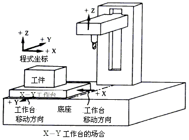
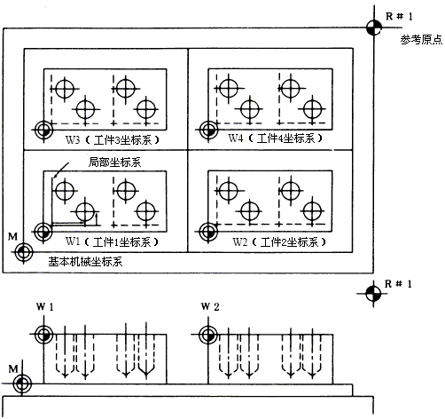
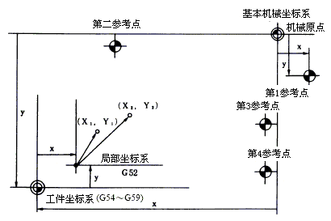
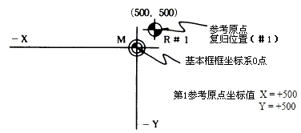

| 坐标系设定机能 |
| 坐标系和控制轴
标准规格的控制轴数为3轴，各加工方向的指定及其相对应的文字坐标术语如下所示： 
|
| 基本机械坐标系、工件坐标系及局部坐标系
基本机械坐标系是机械上固定的坐标系。工件坐标系是程式作成时使用的坐标系，以工件上的基准点设定为坐标原点的坐标系。局部坐标系是在工件坐标系上作成的坐标系，以便与部分加工程式的作成。  机械原点与第2、第3、第4参考原点机械原点是基本机械坐标系的基准点，参考原点是复归时机械上固定的点。第2、第3、第4参考原点是从基本机械坐标系的原点起，用参数设定的坐标值的位置点。
 基本机械坐标系 （2）指令格式 基本机械坐标系选择（G90）G53 Xx Yy Zz αα；（α表示附加轴） （3）详细说明 1)
基本机械坐标系在电源投入后，以自动或手动参考原点复归。决定的参考原点为基准，自动地建立起坐标系。
 |